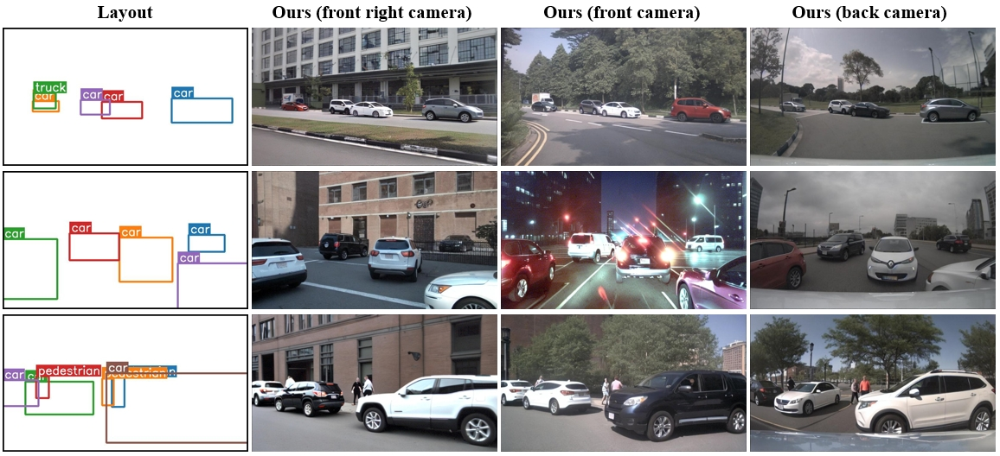
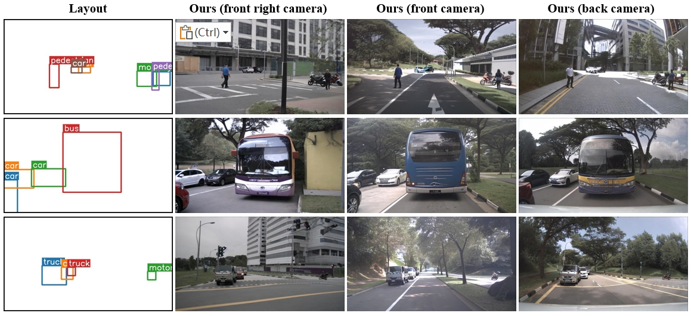

Camera View Control



We are holding W-CODA Workshop @ECCV24!
Check it out here!
Diffusion models have attracted significant attention due to remarkable create contention ability. However, the usage of diffusion models to generate high-quality object detection data remains an underexplored area, where not only the image-level perceptual quality but also geometric conditions such as bounding boxes and camera views are essential.
We propose GeoDiffusion, a simple framework that flexibly translates various geometric conditions into text prompts and empower the pre-trained text-to-image (T2I) diffusion models for high-quality detection data generation. Unlike previous methods, our GeoDiffusion can encode not only bounding boxes but also extra geometric conditions such as camera views in self-driving scenes.
This is the very first work to adopt diffusion models for layout-to-image generation with geometric conditions and show L2I-generated images can be beneficial for improving object detectors.
@article{chen2023integrating,
title={Integrating Geometric Control into Text-to-Image Diffusion Models for High-Quality Detection Data Generation via Text Prompt},
author={Chen, Kai and Xie, Enze and Chen, Zhe and Hong, Lanqing and Li, Zhenguo and Yeung, Dit-Yan},
journal={arXiv preprint arXiv:2306.04607},
year={2023}
}